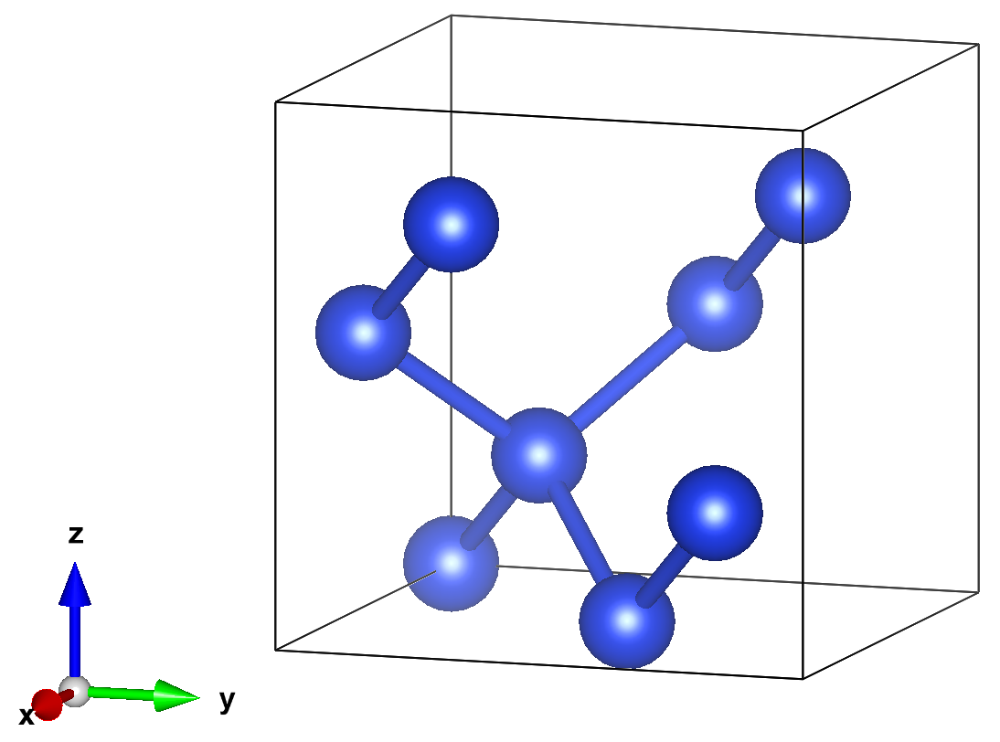
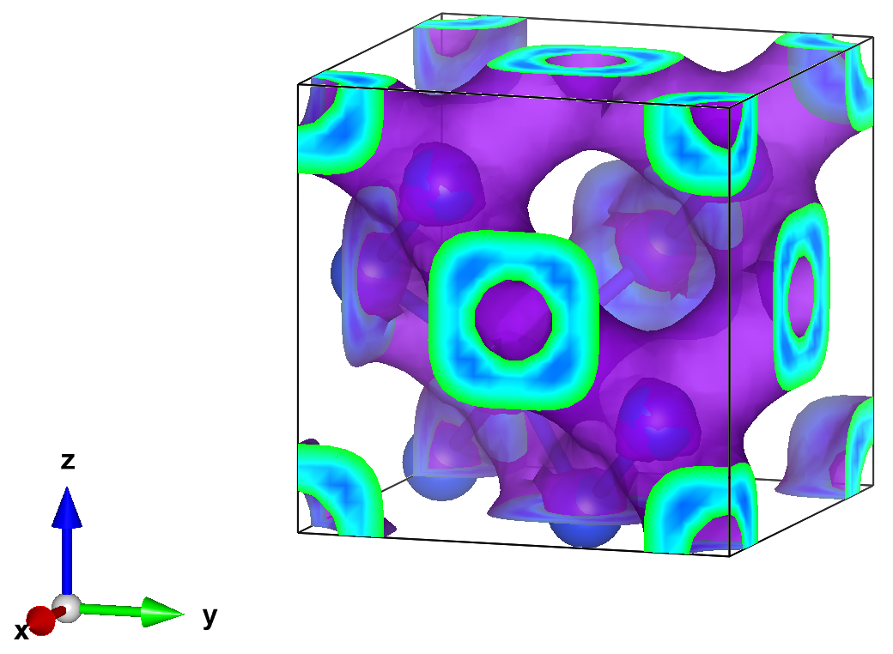

Download this notebook (.ipynb + data files)
1. Si ground state energy and charge density#
In this example, we will compute the ground state energy and charge density of solid Si in the conventional cell.

1.1. External Software#
In addition to SAFIRE and afqmctools, we will be using the following software packages:
Quantum Espresso (QE) for density functional theory (DFT) calculations, and some integrals via its post-processing utilities
CoQuí for generating the SAFIRE Hamiltonian and Trial wavefunction HDF5 files from the output of QE.
pw2coqui.x see the instructions there for adding this to your QE build.
VESTA for visualizing the final density.
1.2. Setup#
First, we need an orthonormal basis to express the second quantized Hamiltonian in.
We will run Quantum Espresso (QE) to generate a set of Kohn-Sham orbitals to use as a basis.
We assume knowledge of the basic use of QE in this example, but we’ll point out a few details that are relevant to the workflow here.
All input files are provided in 1_dft_quantum_espresso.
⚠️ Important: you will need to install the pw2coqui.x converter in your QE build. See the above!
We will perform the following calculations with QE:
self-consistent DFT with a large k-point grid, but a minimal number of bands
a one-shot DFT calculation starting from the converged result in step 1., but at the \(\Gamma\)-point and using a large number of bands.
run the pw2coqui.x post-processing utility to generate data that we will need later.
1.2.1. Step 1 : self-consistent DFT#
To generate the Hamiltonian for SAFIRE, we need
to set force_symmorphic=.true. in the &system input card.
Run self-consistent DFT with the provided input file and pseudopotential.
$ pw.x -inp scf.inp > scf.out
where we have redirected output to scf.out. You should see a final energy of,
highest occupied, lowest unoccupied level (ev): 6.3054 7.0035
! total energy = -62.96095502 Ry
estimated scf accuracy < 0.00000058 Ry
The total energy is the sum of the following terms:
one-electron contribution = 19.02415456 Ry
hartree contribution = 4.49885911 Ry
xc contribution = -19.30056639 Ry
ewald contribution = -67.18340230 Ry
1.2.2. Step 2 : One-shot DFT#
The goal here is generate the orbitals we need to generate the second quantized Hamiltonian for AFQMC. In general, AFQMC needs to be converged in the number of bands included in the basis. Coquí will allow us to select a subset of bands. One possible strategy at this point is to include a relatively large number of bands here and we use Coquí to write a subset of them. This avoids re-running the one-shot DFT calculation at the cost of saving more data.
Run the one-shot QE calculation.
$ pw.x -inp nscf.inp > nscf.out
You should see something like the following,
Band Structure Calculation
Davidson diagonalization with overlap
Computing kpt #: 1 of 1
total cpu time spent up to now is 0.4 secs
ethr = 3.12E-09, avg # of iterations = 49.0
total cpu time spent up to now is 0.4 secs
End of band structure calculation
k = 0.0000 0.0000 0.0000 ( 1189 PWs) bands (ev):
-5.6912 -1.5401 -1.5401 -1.5401 -1.5398 -1.5398 -1.5398 3.4173
3.4173 3.4173 3.4174 3.4174 3.4174 6.3051 6.3051 6.3051
7.0045 7.0045 7.0046 7.0047
occupation numbers
1.0000 1.0000 1.0000 1.0000 1.0000 1.0000 1.0000 1.0000
1.0000 1.0000 1.0000 1.0000 1.0000 1.0000 1.0000 1.0000
0.0000 0.0000 0.0000 0.0000
highest occupied, lowest unoccupied level (ev): 6.3051 7.0045
Writing all to output data dir OUT/pwscf.save/
Note the location of the output data; we will use the orbitals saved there when we compute the real-space charge density.
1.2.3. Step 3: QE post-processing utilities#
CoQuí reads some of the details of the pseudopotential from QE. We need to dump the relevant data to a file using the pw2coqui.x QE post-processing utility. As described above, you will need to install this utility into your QE build using the instructions found here. See the provided input files for more.
pw2coqui.inp
&input_pw2coqui
prefix = "pwscf"
outdir = "OUT"
/
Run the following.
$ pw2coqui.x < pw2coqui.inp > pw2coqui.out
If everything worked, you should see the following files in the “OUT” directory that should have been generated by QE.
$ ls OUT
pwscf.coqui.h5 pwscf.save
We’re ready to move on to CoQuí.
1.3. Writing the second-quantized Hamiltonian and Trial wavefunction#
CoQuí is able to directly generate a Hamiltonian HDF5 file for SAFIRE using the data output by QE. Additionally, it can write a trial wavefunction based on the DFT solution from QE. A sample CoQuí input file is provided.
[mean_field.qe]
name = "mf"
prefix = "pwscf"
outdir = "../1_dft_quantum_espresso/OUT"
nbnd = 20
[interaction.cholesky]
name = "eri"
mean_field = "mf"
output = "hamiltonian.h5"
write_type = "single"
tol = 1e-5
[hamiltonian]
mean_field = "mf"
output = "hamiltonian.h5"
add_wavefunction = "default"
The key details to note are:
In
[mean_field.qe], we need to set theoutdirto the directory where both the QEpwscf.xmlfile is saved, and where[prefix].coqui.h5is.Also in
[mean_field.qe], we can set the number of bands to use withnbnd. Of course, we can only use as many bands as we output in the one-shot DFT calculation previously.In the
interactioninput block, we are using the “cholesky” decomposed form for the interaction and have set a tolerance oftol = 1e-5. We have set theoutputto a file called “hamiltonian.h5` to tell CoQuí to save the interaction there.The
hamiltonianblock is used to write the one-body part of the Hamiltonian to HDF5. We need to set this to the same file as the interaction.Finally, we can save a single Slater determinant wavefunction to the Hamiltonian setting the
add_wavefunction = "default"parameter in thehamiltonianblock. The Slater determinant is constructed by occupying the Kohn-Sham orbitals with the largest occupancy.
Now, run Coquí.
$ /path/to/coqui --verbosity=2 --filenames hamil.toml &> hamil.out
You should see the following output in hamil.out.
---------------------------------
____ ___ ___ _ _ ___
/ ___/ _ \ / _ \| | | |_ _|
| | | | | | | | | | | || |
| |__| |_| | |_| | |_| || |
\____\___/ \__\_\\___/|___|
--------------------------------
| Correlated Quantum Interface |
--------------------------------
Input Parameters
----------------
[mean_field.qe]
name = 'mf'
nbnd = 20
outdir = '../1_dft_quantum_espresso/OUT'
prefix = 'pwscf'
[interaction.cholesky]
mean_field = 'mf'
name = 'eri'
output = 'hamiltonian.h5'
tol = 1.0000000000000001e-05
write_type = 'single'
[hamiltonian]
add_wavefunction = 'default'
mean_field = 'mf'
output = 'hamiltonian.h5'
-- End of Input Parameters --
BZ symm info:
- Number of Qpts in IBZ: 1
- Number of symmetries used with Qpts: 1
- Number of time reversal kpoint pairs: 0
Generating truncated G-space grid:
- size: 1189
Quantum ESPRESSO reader
-----------------------
- nspin: 1
- npol: 1
- nbnd: 20
- Monkhorst-Pack mesh = (1,1,1)
- nkpts: 1
- nkpts_ibz: 1
- nelec: 32.0
- ecutrho: 32.0 a.u.
- fft mesh: (27,27,27)
- wfc ecut: 7.8710084309817 a.u.
- wfc ngm: 1189
- wfc fft mesh: (13,13,13)
Generating truncated G-space grid:
- size: 9315
*******************************************
Electron-electron interaction:
*******************************************
- type: coulomb
- ndim: 3
- cutoff:1e-08
- screen_type:none
*******************************
ERI::cholesky:
*******************************
-pw cutoff (Ha): 32.0
-size of PW basis: 9315
-cholesky truncation: 1e-05
-number of k-point pools: 1
-number of processors per pools: 64
-default block size: 32
iq:0 nchol:153
Writing distributed Vq at iq = 0 to .//hamiltonian.h5
*******************************
Cholesky ERI Reader:
*******************************
- Np max = 153
- accuracy = 1e-05
- read mode = each_q
- eri storage: outcore
- ERI dir = ./
- ERI output = hamiltonian.h5
*******************************
Second-quantized 1-Body Hamiltonian
*******************************
output: hamiltonian.h5
format: qmc
type: bare
add_wfn: default
************************************************
Initializing External Potential:
************************************************
input type: qe::pp/qe::pw2bgw
type: NCPP
# of species: 1
# of atoms: 8
max # of projectors per atom: 8
# of projectors: 64
Memory usage:
Overlaps: 1.9073486328125e-05 MB
Dion: 9.5367431640625e-07 MB
************************************************
*******************************************
Electron-electron interaction:
*******************************************
- type: coulomb
- ndim: 3
- cutoff:1e-08
- screen_type:none
*************************************************
Adding Wavefunction
*************************************************
Adding default wavefunction (assuming MO basis)
Total number of electrons in waveunction: nup:16, ndown:16:
Number of occupied states per kpoint:
ik:0 nocc:16
*************************************************
The HDF5 file, “hamiltonian.h5”, that CoQuí just generated can be directly read in SAFIRE to get the Hamiltonian and the trial wavefunction.
1.4. Run AFQMC#
Next, we’ll run SAFIRE using the Hamiltonian and trial wavefunction that we wrote using CoQuí.
We’ve provided an input file in 3_afqmc for this example.
To learn more about the input file, see Understanding the input file.
The input file assumes that you ran CoQuí within the 2_hamiltonian_coqui directory.
If you ran it elsewhere, you will need to update the path to the HDF5 file
in wavefunction accordingly
A key part of the input file is the “estimator” block for the back-propagation algorithm.
"estimator": {
"name":"back_propagation",
"path_restoration":true,
"extra_path_restoration":true,
"bp_walker_ortho_interval":10,
"measure_interval_multiplier" : [20,40],
"equil_multiplier":40,
"onerdm" : {
"name":"onerdm"
}
},
The “name” parameter tells SAFIRE what kind of estimator to use ("back_propagation" in this case).
The “measure_interval_multiplier” parameter indirectly determines the number of back propagation steps to use.
The actual number of back propagation steps is determined as \(N^{step}_a = \text{measure\_interval\_multiplier}[a] \times \text{population\_control\_interval} \)
To check for convergence in the number of back propagation steps, SAFIRE allows multiple “averages” to be set up which each use a different number of steps. This feature is enabled by provided a list of integers for measure_interval_multiplier instead of a single integer. The number of steps that will be used in each average is given by,
and
Now we can run SAFIRE using this input file. We provided a sample Slurm script. In practice, the slurm details will depend on your specific cluster.
#!/bin/bash -l
#SBATCH -J afqmc
#! Number of MPI ranks (= tasks for Slurm)
#SBATCH --ntasks=192
#SBATCH --time=2:00:00
# set up your enviornment as needed here
#
# source /path/to/env.sh
# Launch MPI code...
date
srun --cpu-bind=cores /path/to/safire afqmc.json &> afqmc.out
date
Or, you can run locally with,
$ mpirun -np [number of processes] /path/to/safire afqmc.json &> afqmc.out &
where [number of processes] depends on how many tasks can be run on your local machine.
We’ve included some of the output below. You should see similar numbers in your output.
****************************************************
Initializing Hamiltonian
****************************************************
Hamiltonian Factory input:
system: sysid_2
filename: ../2_hamiltonian_coqui/hamiltonian.h5
name: hamiltonian_unique_id_5
Initializing Hamiltonian from file: ../2_hamiltonian_coqui/hamiltonian.h5
Found hamiltonian with format: coqui
- Nuclear coulomb energy: (0.000000, 0.000000)
- Frozen Core energy: (0.000000, 0.000000)
- Electron self-interaction energy: (-8.846596, 0.000000)
KPFactorizedHamiltonian input:
name: hamiltonian_unique_id_5
filename: ../2_hamiltonian_coqui/hamiltonian.h5
batched: false
out_of_core: false
cutoff_cholesky: 9.9999999999999995e-07
memory: 4096
nsampleQ: -1
****************************************************
Initializing Wavefunction
****************************************************
Wavefunction type: NOMSD
- Number of determinants in trial wavefunction: 1
- Coefficient of first determinant: (1.000000, 0.000000)
getHamOps from scratch
nkpts: 1
NOMSD input:
nbatch: 0
number_of_references: -1
rediag: false
****************************************************
Initializing Propagator
****************************************************
BasePropagator input:
nbatch: 0
nbatch_qr: 0
i: -1
a: -1
vbias_bound: 50
external_field_scale: 1
upper_cutoff_scale: 10
lower_cutoff_scale: 1
apply_constrain: true
importance_sampling: true
substractMF: true
hybrid: true
printP1eigval: false
free_projection: false
denseP1: false
external_field:
excited:
debug_verbosity: false
--------------- Constructing Propagator ------------------
Using sequential propagation.
vbias_bound: 50
Using sparse 1-body propagator
Using hybrid method to calculate the weights during the propagation.
Local Energy of starting determinant
- Total energy : (-1.191595, 0.000000)
- One-body energy : (0.800315, 0.000000)
- Coulomb energy : (2.632165, 0.000000)
- Exchange energy : (-4.624075, 0.000000)
When SAFIRE has finished running, you should see the qmc.s000.scalar.dat, and qmc.s000.stat.h5 output data files.
$ ls 3_afqmc
afqmc.json afqmc.out qmc.s000.scalar.dat qmc.s000.stat.h5
1.5. Analyze#
1.5.1. Ground state energy#
afqmctools includes a command line tool for analyzing the scalar data output.
Fun the following command.
If you are running locally, the -t option will cause a plot of the scalar data samples versus total projection time to be generated as seen below.
If you are running remotely, you can add the --savefig [filename].png option to save the figure.
Note, you must still use -t to generate the plot.
!scalar_stats 3_afqmc/qmc.s000.scalar.dat -s time -t -e 5.0 --savefig 3_afqmc/energy_vs_beta.png
Your plot should look similar to the following.
1.5.2. Charge Density#
afqmctools provides a function for generating the real-space charge density
given the one-body reduced density matrix (1rdm), and its stochastic uncertainty from AFQMC, as well as the orbitals from Quantum Espresso.
It will output the resulting 1rdm in a standard *.cube file.
The *.cube file can then be opened in one of several
software packages.
The provided script analysis.py demonstrates how to call the charge_density() function.
from pathlib import Path
from afqmctools.analysis.rdm import average_afqmc_rdm
from afqmctools.observables.rhonk import charge_density
qe_output = Path("./1_dft_quantum_espresso/OUT")
afqmc_path = Path("./3_afqmc")
mean_rdms,err_rdms = average_afqmc_rdm(rdm_file=afqmc_path / "qmc.s000.stat.h5")
num_avgs = mean_rdms.shape[0]
for i in range(num_avgs):
charge_density(
mean_rdms[i],
err_rdms[i],
orbital_source=qe_output,
rho_outfile=f"rho_avg{i}_qe_orbs.cube"
)
Finally, we can open the charge density for visualization. Here we used Vesta to make the following isosurface plot (using an isosurface value of 0.0023)

1.6. Removing Systematic Errors#
There are several systematic errors, each controlled by a specific parameter, in AFQMC that we will need to remove for high-quality results.
They are:
the trotter error which can be removed by either converging in the imaginary time step size OR by extrapolation to \(\tau = 0\) (set in the SAFIRE input file)
the cholesky error which is controlled by the cholesky decomposition tolerance (set in the CoQuí input file)
the basis set incompleteness error which is controlled by the number of bands included in the calculation (set in the CoQuí input file, but limited by the QE nscf calculation)
These errors are formally interdependent; however, good values for each parameter can typically be found independently and used together in a production run.
1.6.1. Converging in the basis set size#
Accurately capturing electron correlation effects requires a large basis. Here, we are working the basis of Kohn-Sham bands. We will now converge the AFQMC ground state energy, and the charge density in the number of bands used to form the basis,\(N_{bands}\). We have already seen how to perform each step individually above; We will simply need to run AFQMC for a few choices of \(N_{bands}\).
As \(E_\mathrm{AFQMC}\) and \(\rho_\mathrm{AFQMC}(\vec{r})\) begin to converge, each additional band will individually make only a small contribution. It can be useful, then, to choose a logarithmic set of \(N_{bands}\) to actually run AFQMC for. For example,
>> nbands_log = [ 20*(2**p) for p in range(6) ]
>>> nbands_log
[20, 40, 80, 160, 320, 640]
would allow you to see large changes between each successive run. More points can be added in between these if needed.